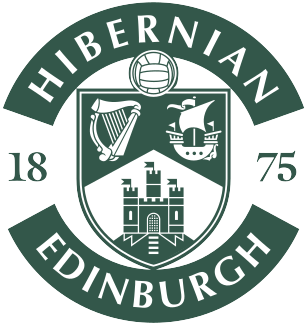

Scottish Premiership
| Pos | Team | P | W | D | L | GF | GA | GD | Pts | Form |
|---|---|---|---|---|---|---|---|---|---|---|
| 1 |  Rangers Rangers | 8 | 6 | 1 | 1 | 11 | 5 | +6 | 19 | WWWWWW |
| 2 | Celtic | 7 | 6 | 0 | 1 | 14 | 4 | +10 | 18 | WWWWWL |
| 3 | Heart of Midlothian | 8 | 5 | 1 | 2 | 19 | 8 | +11 | 16 | WWWLDW |
| 4 | Dundee | 8 | 4 | 1 | 3 | 11 | 8 | +3 | 13 | WLDLWW |
| 5 | Dundee United | 8 | 3 | 2 | 3 | 10 | 11 | -1 | 11 | LWLDWW |
| 6 | St. Mirren | 8 | 3 | 1 | 4 | 8 | 14 | -6 | 10 | DWLLLL |
| 7 | St. Johnstone | 7 | 2 | 2 | 3 | 9 | 10 | -1 | 8 | LLDWLD |
| 8 | Aberdeen | 7 | 2 | 2 | 3 | 7 | 8 | -1 | 8 | LLLDWD |
| 9 | Motherwell | 7 | 2 | 2 | 3 | 9 | 11 | -2 | 8 | DDWLLL |
| 10 |  Hibernian | 8 | 2 | 1 | 5 | 8 | 12 | -4 | 7 | WLLLDL |
| 11 | Falkirk | 8 | 1 | 3 | 4 | 7 | 11 | -4 | 6 | LLDWDL |
| 12 | Kilmarnock | 8 | 1 | 2 | 5 | 7 | 18 | -11 | 5 | LLDWDL |
Updated: 10th October 2026 at 16:55 (BBC) · fetched 10 Oct 2026 18:30 BST · Source: BBC Sport. Form: last 6, oldest first.
Results
Scottish Premiership - 1st Phase · Sat 10 Oct 2026
Rangers 3 – 1 Kilmarnock
HT 3-0
Rangers 3 – 1 KilmarnockHT 3-0
⚽ Rangers: R. Naderi 15', R. Naderi 44', K. Kelsy 24'
⚽ Kilmarnock: N. Cleșcenco 90'
Ibrox Stadium · Att 50,501 · BBC SportW
Scottish Premiership - 1st Phase · Sun 20 Sep 2026
Celtic 0 – 1 Rangers
HT 0-1
Celtic 0 – 1 Rangers
HT 0-1
⚽ Rangers: R. Naderi 33'
Celtic Park · Att 59,650 · BBC SportW
League Cup - Quarter-finals · Sun 13 Sep 2026
Rangers 3 – 0 Celtic
HT 1-0
Rangers 3 – 0 CelticHT 1-0
⚽ Rangers: D. Neil 23', D. Neil 75', K. Kelsy 59'
Ibrox Stadium · Att 51,212 · BBC SportW
Scottish Premiership - 1st Phase · Wed 09 Sep 2026
Rangers 1 – 0 St. Mirren
HT 0-0
Rangers 1 – 0 St. MirrenHT 0-0
⚽ Rangers: B. Miovski 90'+1
Ibrox Stadium · Att 50,336 · BBC SportW
Scottish Premiership - 1st Phase · Sat 05 Sep 2026
Rangers 1 – 0 Motherwell
HT 1-0
Rangers 1 – 0 MotherwellHT 1-0
⚽ Rangers: R. Naderi 12'
Ibrox Stadium · Att 50,868 · BBC SportW
Scottish Premiership - 1st Phase · Wed 02 Sep 2026
Falkirk 1 – 2 Rangers
HT 1-1
Falkirk 1 – 2 Rangers
HT 1-1
⚽ Falkirk: K. Nedeljković 44' (og)
⚽ Rangers: L. Shankland 8', L. Shankland 79'
The Falkirk Stadium · Att 6,847 · BBC SportW
Scottish Premiership - 1st Phase · Sun 30 Aug 2026
Aberdeen 0 – 1 Rangers
HT 0-0
Aberdeen 0 – 1 Rangers
HT 0-0
⚽ Rangers: L. Shankland 69' (pen)
Pittodrie Stadium · Att 18,343 · BBC SportW
UEFA Conference League - Play-offs · Thu 27 Aug 2026
Jablonec 1 – 0 Rangers
HT 0-0 · AET · Pens 4-3 · Agg 1-1
Jablonec 1 – 0 Rangers
HT 0-0 · AET · Pens 4-3 · Agg 1-1
⚽ Jablonec: V. Tchanturishvili 73'
Stadion Střelnice · Att 5,563 · BBC SportL
UEFA Conference League - Play-offs · Thu 20 Aug 2026
Rangers 1 – 0 Jablonec
HT 0-0
Rangers 1 – 0 JablonecHT 0-0
⚽ Rangers: R. Naderi 50'
🟥 C. Devlin 74' (Rangers)
Ibrox Stadium · Att 34,701 · BBC SportW
League Cup - 2nd Round · Sun 16 Aug 2026
Rangers 5 – 1 St. Mirren
HT 2-1
Rangers 5 – 1 St. MirrenHT 2-1
⚽ Rangers: R. Naderi 9', V. Dragojević 18', D. Gassama 52', J. Penrice 54', R. McCausland 74'
⚽ St. Mirren: C. Mochrie 30'
Ibrox Stadium · Att 34,387 · BBC SportW
UEFA Europa League - 3rd Qualifying Round · Thu 13 Aug 2026
Rangers 1 – 1 Jagiellonia Białystok
HT 1-0 · Agg 2-3
Rangers 1 – 1 Jagiellonia BiałystokHT 1-0 · Agg 2-3
⚽ Rangers: L. Shankland 19' (pen)
⚽ Jagiellonia Białystok: N. Prelec 65'
Ibrox Stadium · Att 41,636 · BBC SportD
Scottish Premiership - 1st Phase · Sun 09 Aug 2026
Rangers 1 – 2 Hibernian
HT 0-1
Rangers 1 – 2 HibernianHT 0-1
⚽ Rangers: M. Chaiwa 85' (og)
⚽ Hibernian: J. Campbell 12' (pen), C. Wright 90'+3
Ibrox Stadium · Att 50,893 · BBC SportL
UEFA Europa League - 3rd Qualifying Round · Thu 06 Aug 2026
Jagiellonia Białystok 2 – 1 Rangers
HT 2-1
Jagiellonia Białystok 2 – 1 Rangers
HT 2-1
⚽ Jagiellonia Białystok: E. Fernandez 13' (og), K. Szmyt 21'
⚽ Rangers: Guilherme Montóia 4' (og)
Chorten Arena · Att 19,931 · BBC SportL
Scottish Premiership - 1st Phase · Fri 31 Jul 2026
Dundee United 1 – 1 Rangers
HT 1-0
Dundee United 1 – 1 Rangers
HT 1-0
⚽ Dundee United: L. Rose 38'
⚽ Rangers: T. Aasgaard 56'
CalForth Construction Arena at Tannadice Park · Att 13,465 · BBC SportD